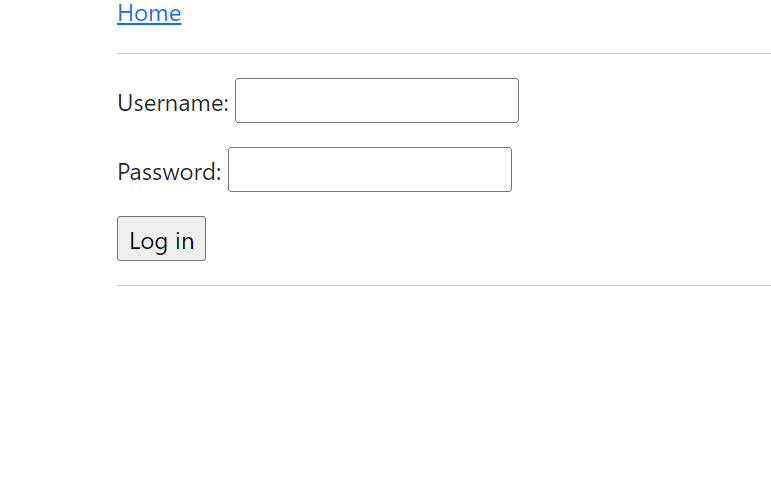

Web Crawler
This is a Web Crawler that was built as a partner assignment for my Networks and Distributed Systems class. It was built to crawl all the pages on a fake social media site ran by our professor dubed "Fakebook". The goal was to find all the flags on the site in about 15 minutes. The project was build in Java and as required by the project all HTTP request and response code was written from scratch. The class does not allow me to make my repository public but access can be granted upon request.
CS3700 Project 5 : Web Crawler
Overview
This project involves the development of a Java-based web crawler specifically tailored for navigating and extracting information from a mock social network site called "Fakebook". The crawler is designed to authenticate, traverse web pages, and collect unique secret flags scattered across the site.
High-Level Approach
The crawler operates by establishing a secure socket connection using Java's SSLSocketFactory and then logs into Fakebook with provided credentials. After successful login, it systematically explores the links found on each page (focusing on those within the /fakebook/ domain) and keeps track of visited URLs to avoid revisiting them. The primary goal is to locate and gather five unique secret flags formatted as 64-character alphanumeric strings.
Challenges Faced
- Session Management: Ensuring a continuous session through cookie management was critical, especially for maintaining the logged-in state.
- Dynamic Content Navigation: Adapting to different page structures and URLs while avoiding redundant visits to previously crawled pages.
- Error Handling: Gracefully managing various HTTP response statuses like 302 (Found), 403 (Forbidden), 404 (Not Found), etc.
- Efficiency: Implementing an efficient and non-repetitive crawling strategy to minimize the load on the server and adhere to ethical crawling practices.
Features of the Design
- Modularity: The code is structured into distinct classes like Sender, Receiver, and SenderThread, promoting clarity and maintainability.
- Concurrency: With the help of the SenderThread, packets can be sent concurrently, maximizing throughput.
- Adaptive Behavior: The protocol can adapt to network conditions by adjusting the time it waits before resending a packet based on current RTT estimates.
- Extensibility: The use of JSON for packet structure means new fields can be added in the future with minimal changes.
- Logging: Uses System.err to log important events and potential issues, aiding in debugging and monitoring.
Testing
- Integration Testing: The crawler's ability to log in, maintain session state, and navigate through different pages was tested in a more integrated manner.
- Edge Case Handling: Specific scenarios, like handling redirects and extracting flags from complex HTML structures, were thoroughly tested.
- Debugging: Extensive logging was utilized for tracking the flow and identifying any logical errors or unexpected behaviors.